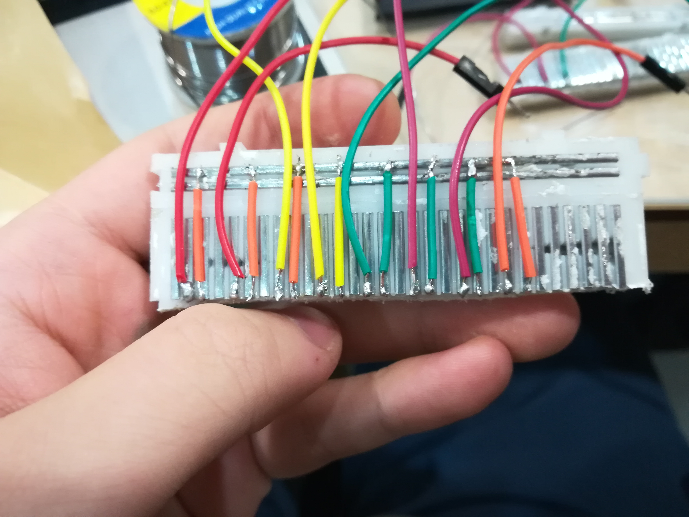
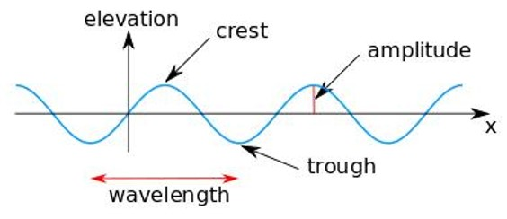
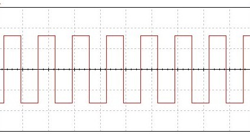
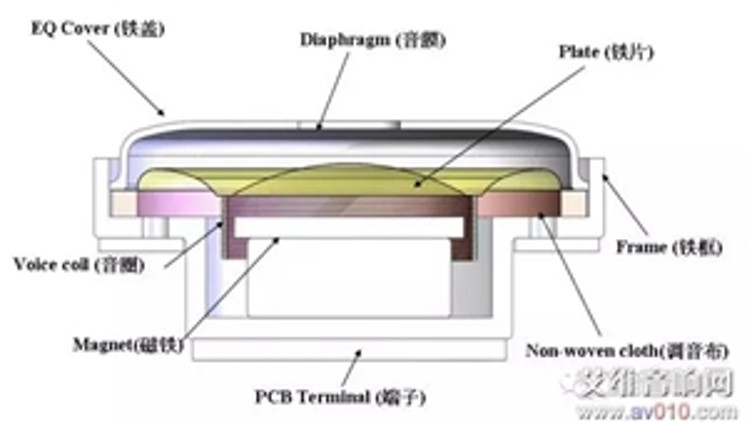
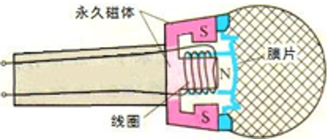
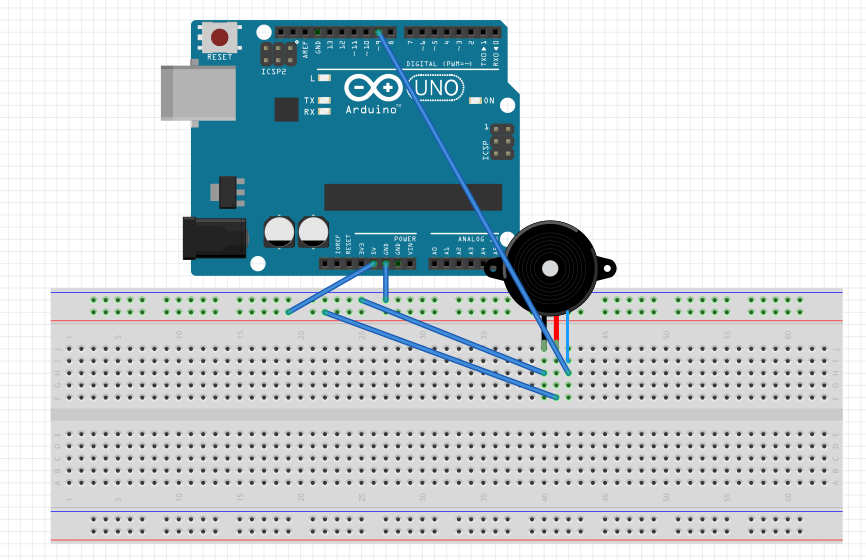
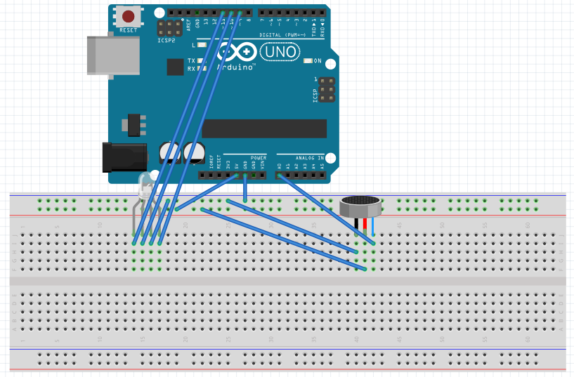
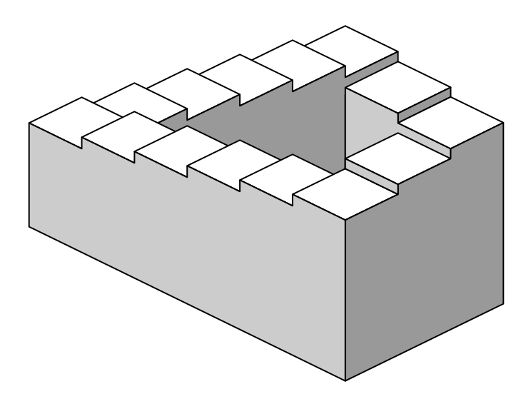

IP: Art & Science
Linux Crash: 20190920
Our project is to express a piece of memory with light (and sound). We use Ardunio, Linux Penguins, and RGB LEDs to interpret some bad memories of the Linux Penguins. In fact, many of them were destroyed by some evil force last semester.
Chemistry: 20190925
Our project is to express a piece of memory with light (and sound). We use Ardunio, Linux Penguins, and RGB LEDs to interpret the bad memory of Linux Penguins. In fact, many of them were destroyed by some evil force last semester.
Computer Science: RGB LED Controlling
In order to show the modern technics of graphics and do an introduction of representation of light using RGB values, Jerry and I designed a workshop, combining Arduino experiments and lecture together to fulfill the purpose.
Code Template (Arduino):
Time-Based Project: Light
1. Thoughts Towards Driving Questions
Due to the limits of time and money, I came up with several driving questions, with their content and technical difficulties shown below.
| Question Content | Technical Difficulties |
|---|---|
| How to construct a pure optical logic gate? | This is the first question being proposed. We already came up with a design of pure optical logic gates, but it requires polarization lens as well as semi-reflective glasses which we cannot afford. |
| How to achieve 4D Modelling with Computer Graphics? | This hypothesis is not achievable under the restrictions of the current time. Therefore, I will ponder through this question in my final project. |
| How to create life using Persistent of Vision? | This is my final driving question in this project. To build a "life", I uses an Arduino Mega, 1 accelerometer, 32 LEDs, 2 Breadboards, and a lot lot lot lot lot jumper cables. |
2. Thoughts before the project
I am a computer scientist, therefore considers everything in a logical and computer-based way. I consider our world as a giant system, where everything acts based on fundamental rules (for example, gravity). Similarly, I can create a different world in the field of computer science with new rules and new principles. This is one of the reasons of why I like computer science: you are the god of your own world.
While thinking of putting art and science together, I thought of creating a "life" that follows rules, seemingly spontaneous, reacts, and tells. Therefore, I designed this "life" that behaves on its own, obeying certain rules, and transfers information to us by rotating itself and using the "persistent of vision" (POV) with LEDs.
3. Getting the materials
List of Materials
- Arduino Mega x1
- A bunch of Blue LEDs
- 2 Breadboards
- Numerous Jumper Cables
- Soldering Iron & Solder
- Insulated Tape
- 1 Electronic drill
- Accelerometer: MPU6050
4. Making the facility
In order to make the facility look neater, I sawed through the breadboards and soldered wires to the back of the breadboards.
Backbone design of soldering breadboards
"Magic": Powering up LEDs with only a breadboard
Research Project: Sound
Questions of Sounds
声音如何产生？ 声音的音波该如何呈现？ 声音如何被视觉表达？ 声音能否用算法转换为颜色？ 如何建模声音？ 音色该如何模仿？ 为什么真空不能传声？ 声波和光波的本质区别？ 如何接受声音？ 如何量化接收到的声音？
My Research
After doing a brief research on sound and sound waves, I decided to go deeper in the aspect of the production and receiving of sounds. The basic results and elements of my research is shown below.
The basic properties of sound waves
We all know that sound has three basic properties: loudness, tune, and tone. Loudness specifies the intensity of the sound, tune the acuteness, and tone the style. However, this principle can be explained in a more fundamental way.
We all know that sound takes the form of a wave, in the meantime being a function of time. Therefore, sound can be analyzed as mathematical wave functions. For a mathematical function, the most important properties are the amplitude and the wavelength, which stands for the intensity of fluctuating and the length between two crests/two troughs, respectively, as shown in the diagram below.
From the mathematic perspective, it is easy to notice that the loudness and tune correlates with the amplitude and wavelength of the soundwaves. However, for the tone of the sound, it is the shape of the wave that matters. For instance, the diagram above is what we call a sine wave. Another wave pattern is the square wave, as shown below. This kind of wave is the most convenient kind of wwave in buzzers, for the square wave can easily be produced by sending out electric signals to the pin of the buzzer. An experiment related to the square wave is conducted, as described below.
Two different process of producing sound: human vocal/productions in movies
In this part, I conducted my research in two different parts:
- Human Vocal
- Production of sound in movies/films
Human Vocal
The main way for humans to pronounce sound is to control his/her throat. A gut of vibrating air, sent out by the trilling throat, forms vowels and consonents by the obstruction of mouth. In the language Quenya, the process of pronouncing the vowel is described as " it is easy to feel how the air streams quite unhindered though the mouth: One merely configures the tongue and lips to "shape" the desired sound ". Consonents, respectively, are similar.
Many different approaches was made based on the human vocal. For instance, the function of voice-demanding in Siri, recognizes people based on the pattern of their voices. Other interesting applications include the alteration of tune using Vocaloid or other softwares based on primitive voice recordings.
Production of sound in movies/films
When a movie is being produced, its video is recorded prior, and its sound is synthesized later. The sound of movies include the background sound and the character's voices. While the voice of roles can be recorded in a recording room easily, creating sound for background is not that easy. The most popular solution to this is to mimic the sound, or make it sound even better. Below is a research about the mimicing process.
Experiment & Research: Sound in Movies
It is interesting to notice the flexibility of how our brain handle the signal it received. When a sound passes through the air, it is conveyed into electric signal by the ear, and ends up at the Auditiver Cortex of the brain through neurons. While our brain is processing, it breaks the sound apart into small parts. The final result of the recognition comes out by assembling these small pieces together. This algorithm is now widely used in the recognition process of artificial intelligence.
Electronics: Producing and Receiving Sounds —— The Earphone
The last part that I looked into is the electronic version of producing and receiving sounds. Before actually getting into the details, we need two knowledge prerequisites:
- A force is exerted to a conductor with current inside when the conductor is in a magnetic field.
- If a part of a circular circut is cutting the magnetic field lines, a current is created inside the circut.
Based on these basic knowledge, the earphone and the microphone is created. When the phone decided to play music, a small electric current is sent to the earphone, making the conductor inside the magnetic field vibrate. The frequency of the vibration depends on the intensity of the current, and is therefore controllable. The vibration causes the air to trill, thus the sound. The microphone works just the same way. When sound is passed to the microphone, the small plate inside the microphone vibrates, causing the current in the conductor. This current is then amplified and picked up by the computer/device attached, or even compressed into an audio file. Below are the images of earphones and microphones; two experiments are conducted with the help of these principles.
 My Projects
After researching in the production and receive of sounds, I used the open-source chip Arduino to experiment with sound.
Experiment 1: Manipulating the frequency of sounds created by a passive buzzer
A passive buzzer is a device that can make sound by receiving electric signals. In order to give off notes, we have to manipulate the frequency of the sound being produced. This is done by sending out high/low electric signals with different time intervals, causing the parts in the buzzer to vibrate. This way, the buzzer produces square waves with various frequencies.
In order to help other learners understand the way of modelling sound and go through the process of producing sounds, I opened up a workshop, giving them the experience of using coding to generate sounds. Below is the construction image and the generalized code for the workshop.
A recording of the passive buzzer music
Experiment 2: Detection of sound & alarm when loudness reaches threshold
My another attempt is to use the sound receiver (microphone) to measure the loudness of the sound around it, which is characterized as the amplitude of the sound waves, as mentioned above. When a threshold of loudness is reached, the RGB light will turn red, sending out a warning. This facility can be used to measure the quietness of a working space in Moonshot.
The basic properties and working principles of the sound detector is a bit different with a regular microphone as described in the research part. In reality, the microphone is connected to the Arduino chip by three pins: 5V, GND, and an input pin (for example, A0). The parts of vibrating stays the same, but an additional screw serves the need to alter the threshold of sound loudness. When the limit is reached, the sound detector will convey the electric current from 5V to the input pin A0.
A video demo of the sound detecting facility
Experiment 3: Voicing for a movie
Finally, I decided to voice for Aragorn, Legolas, and Boromir in the movie The Lord of the Rings: The Fellowship of the Ring. The video is shown below.
Daniel-voiced LotR Video
Different ways of art
- Painting
- Illumination
- Building
- Screenshot
- Suspension of objects
- Wrapping & material tweaking
- Captivity presentation
- Posters
- Lines and Weaving
- 3D Objects
- Slicing of creatures
- Ground spliting/painting
- Repitition
- Self-aware paints
- Experience
- News & Events
- Clothing
- Satire Comic
- Computer Graphics
- Abstract Information & Presentation
- Letters and Natural Languages
- Calligraphy
Final Project
Project Abstract
Currently, the field of computer graphics grow complete and sophisticated. One of the most unique properties of computer graphics is that it can create things "unreal": from a world without gravity to a dozen self-rotating balls, from simulating a car accident to a complex blobbing shape, computer graphics offers the power of creating impossible.
Meanwhile, the imagination of higher spacial dimensions are thriving as ever. Visions begin to take place in fiction novels: for example, in Cixin Liu's Threebody III: Death's End, the spaceships from the Earth had encountered 4-Dimensional fractions in the space.
Having considered these two different aspects, I decided to start a project on the modelling of 4D Objects. The desired final outcome of this project will be a 4D-Modelling Software, supporting the main modelling processes of current 3D Modelling Softwares, for example, viewing, intersecting, UV Mapping, illumination, and other functions (see the figure below). Of course, as a three-dimensional creature, our brain cannot process a 4D Object directly; therefore, this application provides two different methods of decreasing dimensions: slicing and projection.
I also want to model several interesting optical illusions in this software, for instance, the Penrose stairs (shown below). These optical illusion objects theoretically exists as 4D objects. Also, a paper may be written to describe the process.
A Depiction of the Famous Penrose Stairs
Origination of Idea
Optical Illusion
Since I was very young, I grew an interest in the world of Optical Illusion. The master of optical illusion drawings is Maurits Cornelis Escher, depicting weird spaces in all kinds of methods. Stairs are twisted into impossible angles and water flow from low places to high places. In these paintings, two of the most important elements are called the Penrose triangle and the Penrose stairs. Penrose triangle is a triangle with three ninety-degreed angles, while Penrose stairs ascend/descend infinitely.
In the fall of 2018, I attended a course called “if the eyes deceive you” in Moonshot. As my final project, I used Unity, Maya, and 123D Design to recreate the Penrose Stairs and the Penrose triangle. By setting my viewing direction to a specific angle, the deliberately modelled cubes and spheres overlap with each other, creating beautiful optical illusions. A screenshot of my project is shown below. On the left, the Penrose triangle rotates around the middle; on the right, the ball falls infinitely along the stairs.
A third piece of inspiration comes from novels and Wikipedia webpages. Currently, more and more science fiction novels include the elements of higher dimensions, even the famous ThreeBody by Liu Cixin. The fourth dimension is described repeatedly by all kinds of authors, leaving the space of imagination to their mass readers. Being one of them, I couldn’t help thinking: what on earth are higher dimensions like? How can we visualize or recreate them so that we can at least try to understand them?
Standing at the brink of proposing a topic, the current project burst into my mind: I shall make a 4D modelling application, having the ability to turn 4D objects into 3D by orthogonal projection.
And that’s the origin of my story. The start of my story.
Decreasing Dimensions
Technically there are two main methods of decreasing dimensions: Slicing and Projection.
Slicing
Slicing, as its name indicates, decreases the dimensions by setting a particular coordinate to a fixed number. Here, we assume that our world is on the 3D-plane (x, y, z, 0), or w = 0. Below is a video that explains the slicing of Hyperspheres, Hypercones, and Tesseracts clearly.
Slicing of 4D Objects
Projection
Another option of decreasing dimensions are making projections: from a 4D space to a 3D plane. Below is a diagram showing a rotating projected tesseract.

Introduction
The process of displaying can be divided into: transformation of objects, projection of objects, clipping, illumination ray-tracing, and color determination. The essence of these procedures are matrix operations and linear algebra. I will not introduce the mathematical models, but I will do a brief introduction on these steps.
The first and most fundamental algorithm in the world of Computer Graphics is the transformation matrices. Being the absolute base, they act in all kinds of calculations, moving the object around, rotating them, and scaling them. There are three kinds of transformation matrices: TranslationMatrix, RotationMatrix, and ScaleMatrix. By multiplying the matrices on the original homogeneous coordinate representation, we get the new object swiftly.
The second step of viewing the object constitutes of face-detection and clipping. Because of the limited resources in both calculation powers and RAM, we choose to display and calculate as less as possible. Face-detection acts to wipe out faces that are completely unseen, while clipping algorithms clip the lines out of the projection cone.
After that, we come to the world of surfaces and illuminations. Algorithms of illumination is actually based on real-world physics. Computers run huge calculations called ray-tracing, tracing the rays of light emitted from the environment or from a single-point light source. Surfaces reflect the rays based on mathematical models, changing the color, strength, and direction of the light rays in the process. After the ray-tracing, the color of every pixel is determined by the ray targeted at that point in the orthographic projection.
Project Management
- Math Facilities (Matrix Operations, Vector Operatinos, Color, etc.) 15%
- Transformation Matrices 15%
- Projection Matrices 10%
- Clipping & Visible Face Detection 10%
- Illumination: Phong Shading, Ray Tracing 25%
- Building DataBase: Saving the points 5%
- Display & User Interface 10%
- Object Display 10%
Current Process: Building DataBase